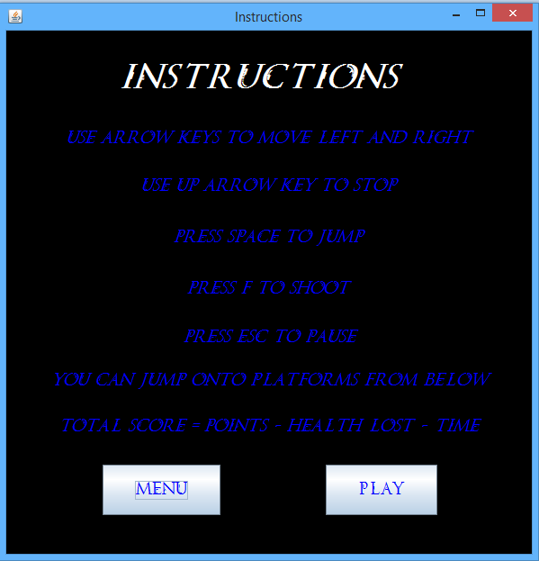
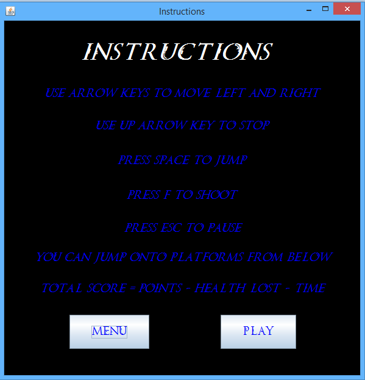

This is a game that I made in June of 2015 using Java. It's my own version of Megaman X, and it was designed using Object Oriented Programming with Eclipse as my IDE. All image editing was done using Adobe Photoshop. The game is complete with a menu, instructions, credits, and scoreboard. There is also music that plays in each of the screens. The objective of the game is to reach the end without the player losing all of their health due to the turrets or enemies.
The program is run as an applet, and makes use of loops, recursion, RNG, key-press input, as well as searching and sorting algorithms. The animations are done with the Graphics class and applet threads. In addition, the scores and stats after the game is sucessfully finished is appended to a textfile. This textfile is read into a table everytime the user looks at the scoreboard.
This is another applet that I made using Java, and it was my first time using Object Oriented Programming. Coding was done through the Eclipse IDE and image editing was done with Adobe Photoshop. It's a simple space game where the user shoots at comets and alien ships with a limited number of lives and bullets. The alien ships will also shoot in addition to move. The applet also makes use of RNG when determining initial locations of the comets and their type. There are also powerups that periodically appear and are available to the player.
Collaborators: David Lu, Anmol Mago, Mara Gagiu, and Alston Lin
WATWatch was a project that I worked on with four other classmates in November 2015. Made for our SE101 Course (Introduction to Methods of Software Engineering), WATWatch is a simple functional smartwatch that takes full use of the hardware capabilities of the Tiva Launchpad and Orbit Booster Pack. WATWatch tracks time, steps, and calories burned in a session. In addition to displaying time, WATWatch also features an alarm, timer, and startwatch. It also displays ambient temperature.
For this project, we learned how to read input from the Orbit Booster Pack's various hardware features, such as the potentiometer, accelerometer, temperature sensor, switches, and buttons. We also had to learn how to print text onto the LED display of the Booster Pack. Coding was done on a text editor (Sublime Text), and the Energia IDE was used to compile and upload the code into the hardware. Version control and code collaboration was done using Github. The language the code was written was in C.
Collaborators: David Lu, Danny Liu, and Mara Gagiu
WatChewUpTo is an Android app that I collaborated on with 3 of my classmates during Waterloo's Eng Hack held in November 2015. The app was made in less than 24 hours, since the event was only that long. WatChewUpTo is an app that allows users to register an account and then search for food that uWaterloo Food Services serves. David wrote a PHP script that crawled the uWaterloo Food Services website, storing the nutrional info of each food into a database. The rest of us created the UI and the actual Android app itself. We then learned how to have the Android app communicate with the database and display search results.
For me personally, this was my first time trying Android dev, which made the process quite difficult, but I gained a lot of exposure to mobile dev and Android studio. I learned how Android app UI is designed, and how to implement basic app functionality such as buttons, textfields, and activities. All coding was done on Android Studio, while version control was done with Github.
 
